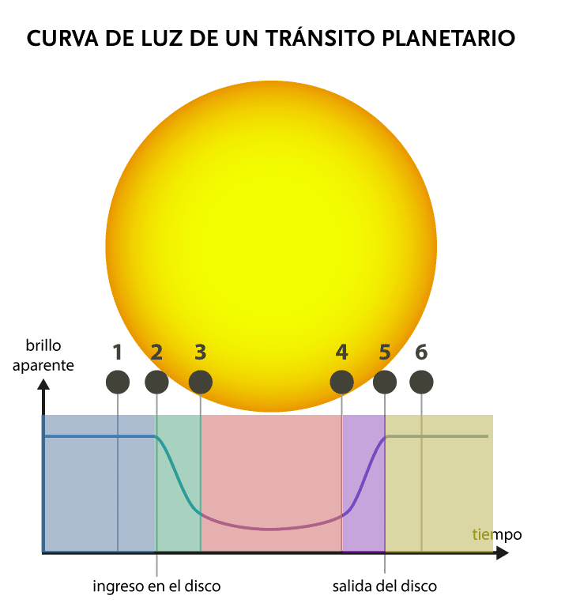
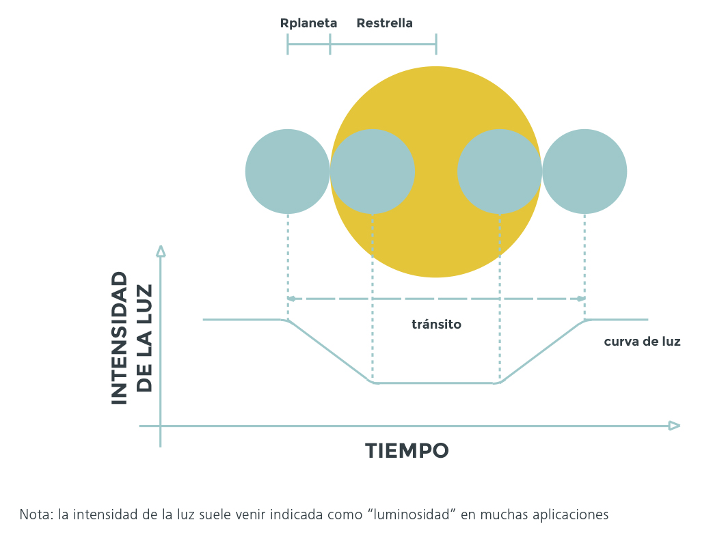
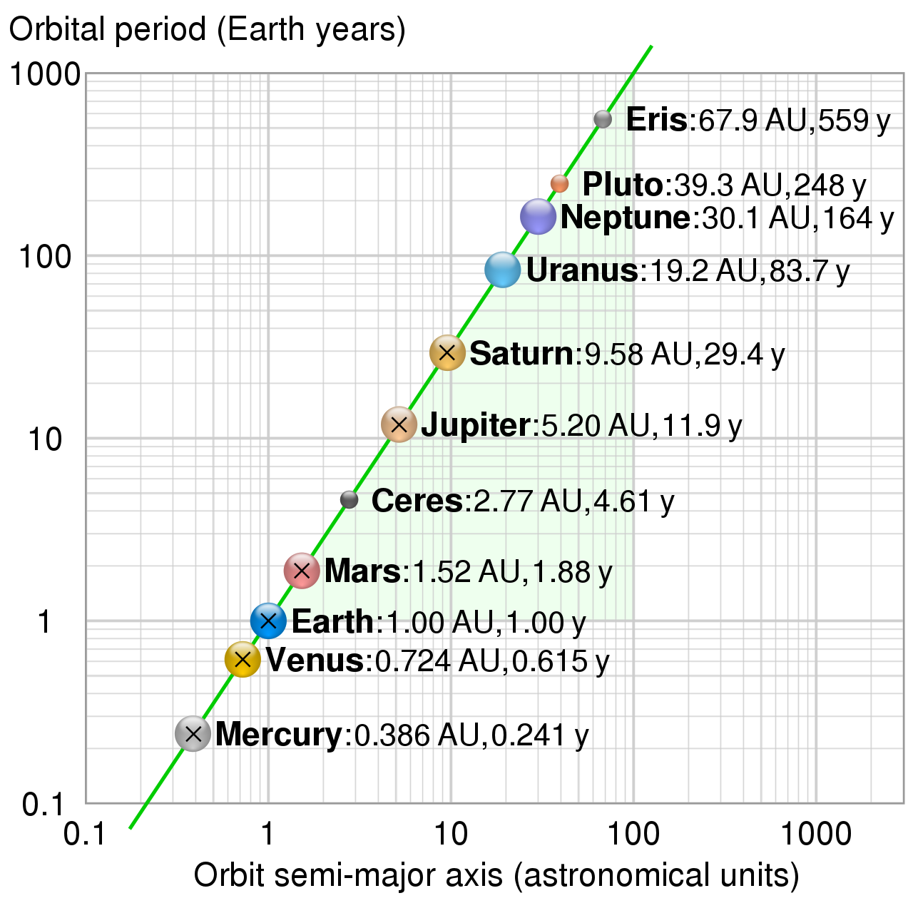

1. Extrayendo información de las gráficas del tránsito
Ya has visto que podemos extraer mucha información sobre los exoplanetas que orbitan una estrella a partir de sus gráficas de luminosidad. En particular podemos conocer fácilmente:
- El número de exoplanetas que orbitan alrededor de una estrella.
- El radio (diámetro) de cada uno de los exoplanetas.
- La distancia relativa de la órbita del exoplaneta a la estrella, es decir, podemos saber qué exoplaneta está más cerca de la estrella y cuál más lejos aunque para saber la distancia exacta debemos tener acceso a más datos.
Para entender esto, en parejas, reflexionaremos sobre los fenómenos que ocurren en los siguientes casos. Prestad atención porque después tendréis que resolver una cuestión con todo lo que ya hayamos aprendido.
Veamos con detenimiento una curva de tránsito

Fíjate bien en la siguiente gráfica. En ella hemos coloreado diferentes regiones para que te sea más sencillo interpretar lo que está ocurriendo en cada momento.
En ella el círculo amarillo representa una estrella y el negro un exoplaneta que la órbita. Además podemos distinguir cinco zonas diferentes que se han coloreado para que te resulte más sencillo detectarlas. Veamos qué ocurre en cada una de ellas.
1.- Zona azul: En esta zona el brillo aparente de la estrella aparece como una línea horizontal.
2.- Zona verde: El exoplaneta comienza a entrar en el disco estelar por lo que el brillo disminuye. Además, dado que cada vez será más la superficie de la estrella que se queda oscurecida por el paso del planeta, el brillo aparente de la estrella seguirá disminuyendo hasta que todo el disco del exoplaneta esté por delante de la estrella.
3.- Zona roja: En esta región todo el disco del exoplaneta oculta parte de la estrella por lo que el brillo aparente de la estrella será estable y, dado que todo el exoplaneta oculta a la estrella el brillo aparente de la estrella alcanzará un valor mínimo.
4.- Zona morada: Ahora el exoplaneta comienza a salir del disco de la estrella por lo que el brillo aparente de la estrella comenzará a aumentar y lo hará mientras la cantidad de disco planetario que oculta la estrella sea nulo.
5.- Zona amarilla: En esta zona el brillo de la estrella vuelve a alcanzar su valor máximo dado que ya el exoplaneta ha salido del disco estelar.
Como ves, cuando colo un exoplaneta es el que pasa entre la estrella y el punto respecto de la que la estamos observando es bastante sencillo interpretar la gráfica que muestra la variación del brillo aparente de la estrella debido al tránsito del exoplaneta.
Calculando el tamaño relativo de un exoplaneta
Es bien conocido que existe una relación que liga la caída de la intensidad de la luz emitida por una estrella con la fracción del disco de la estrella que un objeto/exoplaneta eclipsa, o lo que es lo mismo, con el área del disco del planeta y con el área del disco de la estrella.
Dicha relación la podéis encontrar en la imagen que acompaña esta imagen y que os permitirá calcular el tamaño de un exoplaneta a partir de la gráfica de su tránsito.

La segunda ley de Kepler y las órbitas de los exoplanetas
Las leyes de Kepler permiten entender el movimiento de los planetas alrededor de la estrella a la que orbitan y, en particular, la tercera ley de Kepler permite saber en el caso de un sistema planetario cuál de ellos orbita más cerca de su estrella y cuál lo hace más lejos. Pero veamos qué dice esa ley.
La tercera ley, también conocida como armónica o de los periodos, relaciona los periodos de los planetas, es decir, lo que tardan en completar una vuelta alrededor del Sol, con los radios medios de sus órbitas y afirma que el cuadrado de su periodo orbital es proporcional al cubo de su distancia media al Sol. Esto es:
donde:
T : Periodo del planeta. Su unidad de medida en el Sistema Internacional es el segundo (s)
k : Constante de proporcionalidad. Su unidad de medida en el Sistema Internacional es el segundo al cuadrado partido metro cúbico.
r : Distancia media al Sol. Por las propiedades de la elipse se cumple que su valor coincide con el del semieje mayor de la elipse, a. Su unidad de medida en el Sistema Internacional es el metro (m).
Observa que como consecuencia de esta ley, los planetas se mueven tanto más despacio cuanto mayor es su órbita lo que corrobora las observaciones experimentales realizadas sobre cualquier sistema exoplanetario y, en particular, para el Sistema Solar. Fíjate en la siguiente gráfica:

En esta gráfica aparecen los periodos orbitales para distintos objetos del sistema solar en función del radio medio de sus órbitas presentándose ambas escalas en formato logarítmico. Si la observas con atención te darás cuenta que a medida que aumenta la distancia de un objeto a su estrella también lo hace y que todos los puntos se ajustan mediante una misma línea recta que corresponde exactamente al enunciado de la tercera ley de Kepler.
Esta ley permite explicar perfectamente por qué el período orbital de la Tierra es menor que el de Júpiter debido a que la distancia de la Tierra al Sol es mucho menor que la de Júpiter al Sol.
Si aplicamos este mismo razonamiento a las gráficas de tránsito de un sistema exoplanetario podremos concluir que aquel exoplaneta que presente una fase de tránsito (corresponde a la fase en la que todo el disco planetario oculta una región de la superficie de la estrella) más breve tendrá un radio orbital más pequeño, es decir, orbitará más cerca de su estrella y por lo tanto podremos saber la posición relativa de unos planetas respecto de otros.
¿Cuánto son?
Obviamente cuando observamos una estrella puede ocurrir que varios exoplanetas estén transitando por delante de ella por lo que veremos una caída en el brillo aparente de la estrella proporcional a la superficie de la estrella que ambos ocultan juntos. También podría ocurrir que los exoplanetas estuvieran alineados en ese momento y entonces no podríamos percibir inicialmente ese efecto pero, en dado que se trata de un curso introductorio no contemplaremos ese caso. Para que puedas entender más fácilmente lo que hemos afirmado anteriormente presta atención a la siguiente simulación:
En este caso la simulación plantea el tránsito de dos exoplanetas por delante de una estrella. Si observamos la gráfica que se va representando a medida que se reproduce la simulación podemos ver que:
- Cuando el primer exoplaneta se interpone entre la estrella y nuestra posición de observación se produce una caída en el brillo aparente de la estrella.
- Cuando el disco de este primer exoplaneta oculta por completo la estrella el brillo aparente de esta se estabiliza y en la gráfica aparece una línea horizontal.
- En el momento en que el disco del segundo exoplaneta oculta parcialmente la superficie de la estrella se produce una nueva caída del brillo aparente de la estrella debido a que la región oculta ahora es mayor.
- Cuando los dos exoplanetas transitan por delante de la estrella, el brillo aparente de la estrella vuelve a estabilizarse en un valor mínimo.
- El primero de los exoplanetas comienza a dejar de transitar por delante de la estrella por lo que se disco solo ocultará parcialmente la superficie de la estrella. Esto hace que, aunque el otro exoplaneta siga ocultando la estrella, el brillo aparente de la estrella aumente ya que la cantidad de su superficie que sigue oculta disminuye.
- En el momento en que uno de los exoplanetas deje de transitar la estrella el el brillo aparente de la estrella vuelve a estabilizarse.
- El segundo de los exoplanetas comienza a dejar de transitar volviendo a repetirse el fenómeno explicado anteriormente. En el momento en que ninguno de los exoplanetas transite por delante de la estrella su brillo aparente volverá a estabilizarse y presentará el mismo valor que inicialmente ya que ninguna región de su superficie estará oculta desde nuestra posición de observación.